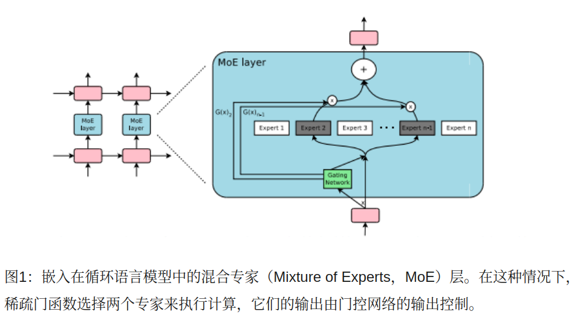
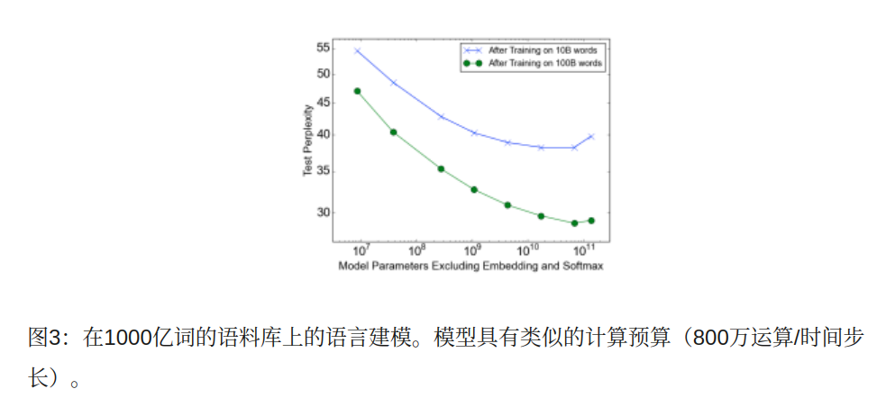

Concept “1370億個參數”
谷歌大脑的这项最新研究作者包括 Geoffrey Hinton 和 Jeff Dean，
论文提出了一个超大规模的神经网络——稀疏门控混合专家层（Sparsely-Gated Mixture-of-Experts layer，MoE）。
MoE 包含上万个子网络，每个网络的参数更是高达 1370 亿个之多
=> 超大型網路
通过灵活控制部分网络，新的技术在大规模语言建模和机器翻译基准测试中，
花费很小的计算力实现了性能的显著提升。这项工作是深度网络条件计算在产业实践中的首次成功，
有助于推广神经网络以及新应用的产生
conditional computation
神经网络吸收信息的能力受其参数数量的限制。有人在理论上提出了条件计算（conditional computation）的概念，
作为大幅提升模型容量而不会大幅增加计算力需求的一种方法。
在条件计算中，部分网络的活动以样本数量为基础（active on a per-example basis）。
然而在实践中，要实现条件计算，在算法和性能方面还存在很大的挑战。
在本次研究中，我们针对这些问题并最终在实践中发挥出条件计算的潜力，
在模型容量上得到超过 1000 倍的提升，同时让现代 GPU 集群的计算效率仅发生了微小的损失。
我们提出了一个稀疏门控混合专家层（Sparsely-Gated Mixture-of-Experts layer，MoE），
- (1) 由多达数千个前馈子网络组成 => 很多網路
- (2) 可训练的门控网络会决定这些专家层（expert）的稀疏组合，并将其用于每个样本 => 一些控制邏輯(可訓練)被當作專家
我们将 MoE 应用于语言建模和机器翻译任务，在这些任务中模型性能（model capacity）对于吸收训练语料库中可用的大量知识至关重要。
我们提出的模型架构中，高达 1370 亿个参数被卷积地应用于堆叠的 LSTM 层当中。
在大型语言建模和机器翻译基准测试中，这些模型以更低的计算成本获了得比现有最好技术更好的结果。
利用训练数据和模型大小的规模是深度学习成功的关键。
当数据集足够大时，增加神经网络的容量（参数数量）可以得到更高的预测精度
这已在一系列研究领域的工作中得到证实，包括文本，图像，音频等领域。
对典型的深度学习模型，其中整个模型被激活用于每个示例，由于模型大小和训练样本的数量增加，
导致训练成本几乎二次方级地增加。但是计算力和分布式计算的进步不能满足这种需求。
为了提升模型能力，同时不会成比例地增加计算成本，
已经有前人研究提出了各种形式的条件计算（conditional computation）。
在这些设计中，网络的大部分在每个示例的基点上（on a per-example basis）可以是活动的（active）或者非活动的（inactive）。
门控决策（gating decisions）可以是二进制的（binary），稀疏连续的（sparse and continuous），
随机的（stochastic）或确定性的（deterministic）。用于训练门控决策的强化学习和反向传播算法也有多种形式
虽然这些想法在理论上很不错，但迄今为止还没有研究能证明它们在模型容量（model capacity），训练时间或模型质量有大的提高。我们将此归咎于以下难点
conditional computation chanllenges
- (1) branch issue: 现代计算设备，“特别是 GPU，在运算（arithmetic）上比在分支（branching）上快得多”
- 前面提到的大部分研究都认识到这一点，并提出利用每个门控决策打开/关闭网络的较大chunk。
- (2) 批大小对网络性能至关重要，因为它们摊销了参数传输和更新的成本。条件计算减小了网络的条件激活块的批大小。
- (3) BW issue: 网络带宽可能是一个瓶颈。一组GPU可能拥有的计算能力比聚合设备间网络（aggregate inter-device network）带宽大几千倍。
- 为了计算效率，计算与网络需求之比必须超过该比率。嵌入层可以看作是一种形式的条件计算，正是这个问题的不利条件。
- 由于嵌入通常需要跨网络传送，交互的数量（例如参数数量）受网络带宽而不是计算能力的限制。
- (4) 根据这样的图式，损失项（loss terms）可能是实现每个 chunk 和/或每个 example 的期望稀疏水平（sparsity）所必需的。
- Bengio 等人（2015）的研究使用了三个这样的损失项。这些问题可能会同时影响模型质量和负载平衡。
- (5) 模型容量（model capacity）对非常大的数据集来说是最关键的。
- 现有有关条件计算的前人研究涉及由较小的图像识别数据集组成的包含 600000 张图像的数据集。
- 很难想象这些图像的标记提供足够的信号来充分训练具有数百万，甚至数十亿的参数的模型。
Solution : Sparsely-Gated Mixture-of-Experts layer
我们的条件计算方法是提出一种新型的通用神经网络组件：
稀疏门控混合专家层（MoE）。
- (1) MoE 由许多专家组成，
- (2) 每个专家都有一个简单的前馈神经网络和一个可训练的门网络（gating network），
该门网络选择专家的一个稀疏组合来处理每个输入（见图1）。网络的所有部分通过反向传播一起训练
虽然我们提出的该项技术是通用的，但在本研究中，我们专注于语言建模和机器翻译任务，
这些任务已经被证明能从非常大的模型中获益。我们在堆叠的 LSTM 层之间应用一个卷积MoE（Hochreiter＆Schmidhuber，1997），
如图1所示。对文本中的每个位置，MoE 都被调用一次，在每个位置上可能选择不同的专家组合。
基于句法和语义（见附录E Table 9），不同的专家能够高度专业化。在语言建模和机器翻译基准上，
我们以很小的计算成本得到了比现有已发表最佳结果更好的表现。

专家混合（MoE）层的结构
专家混合（MoE）层由一组 n 个“专家网络” E1，…，En 和“输出为稀疏 n 维向量”的“门控网络”G组成。
图1 显示了 MoE 模块的结构。每个专家本身也是神经网络，都有自己的参数。
虽然原则上只需要专家接受相同大小的输入并产生相同大小的输出，但在本文的初步调查中，
我们将情况限定为这些模型都是具有相同架构的前馈网络，但参数是彼此独立的。
门控网络
(1) Softmax 门控 非稀疏门控函数的简单选择（Jordan和Jacobs，1994）是将输入乘以可训练的权重矩阵Wg，然后应用Softmax 函数。
(2) Noisy Top-K 门控 我们在 Softmax门控网络中增加了两个组件：
稀疏和噪声。进行 Softmax 函数之前，我们添加可调高斯噪声，然后只保留前 k 个值，
将其余部分设置为 -∞（这导致相应的门值等于0）。稀疏度能够节省计算力。
虽然这种形式的稀疏性在门控函数的输出中产生了一些理论上不连续，但我们在实践中尚未观察到这成为问题。
噪声项（noise term）有助于负载平衡（load balancing）。每个分量的噪声量由第二个可训练权重的矩阵 Wnoise 控制。
训练门控网络我们使用简单的反向传播训练门控网络和模型的其余部分。
如果我们选择 k> 1，则前k 个专家的门值相对于门控网络的权重具有非零导数。这种类型的行为在（Bengio 等人，2013）
关于噪声整流器的研究中有相关描述。梯度也通过门控网络进行反向传播一直到其输入。
我们采用的方法与（Bengio 等人，2015）的不同，他们使用布尔门和一个 REINFORCE 风格的方法来训练门控网络。
批处理问题
在现代 CPU 和 GPU 上，大的批处理量对于计算效率是必要的，这样能够分摊参数加载和更新的开销。
如果门控网络为每个样本从 n 个专家中选择 k 个，则对于一批 b 个样本来说，
每个专家接收的批次要远远小于 b 个样本。这导致随着专家数量的增加，朴素 MoE 的实现变得非常低效。
这种收缩批处理问题的解决方案是使原始批处理量尽可能大。但是，批量大小多受存储前进和后退之间激活所需的存储器的限制。
由此，我们提出了以下技术用于增加批量大小：
(1) 混合数据并行性和模型并行性（Mixing Data Parallelism and Model Parallelism）
在传统的分布式训练设置中，不同设备上的模型的多个副本异步处理不同批次的数据，并且通过一组参数服务器来同步参数。
在我们的技术中，这些不同的批次同步运行，以便它们可以组合为 MoE 层。
(2) 利用卷积性：在我们的语言模型中，我们对上一层的每个时间步长应用相同的 MoE。
如果我们等待上一层完成，我们可以将 MoE 作为一个大批次，应用于所有时间步骤。
这样做会将输入MoE 层批次大小增加 n 倍，n = 展开时间步长的数量。
(3) 增加 Recurrent MoE 层的批量大小：我们认为更强大的模型可能需要循环地使用 MoE。
例如，可以用 MoE 代替 LSTM 或其他 RNN 的权重矩阵。可惜，这样做会破坏上面提到的利用卷积性，
因为在一个时间步长对 MoE 的输入取决于在先前时间步长的 MoE 的输出。Gruslys 等人（2016）描述了一种技术，
通过重新计算正向激活（forward activations），大幅减少了展开的 RNN 中存储的激活的数量。使用这种技术就能使批处理量大大增加。
result 1000亿词汇谷歌新闻数据库
图3显示了在100亿词（上边的线）和1000亿词（下边的线）的数据上训练之后的作为容量函数的测试困惑度。
当训练数据超过1000亿词汇时，测试困惑度显着提高到65536个专家（680亿个参数），比计算匹配的基线降低39％，
但减少了131072个专家，这可能是由于稀疏性太高。两条线之间的差距扩大表明增加的模型能力对更大的训练集有利。
即使在65536专家（99.994％层稀疏）上，该模型的计算效率可保持在 0.72 TFLOPS / GPU。
